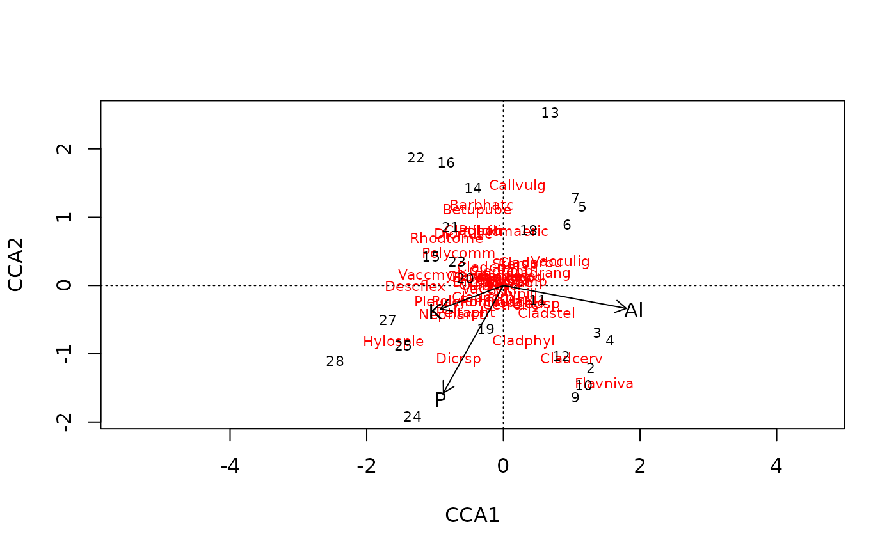

ordiArrowTextXY.RdSupport functions to assist with drawing of vectors (arrows) on
ordination plots. ordiArrowMul finds the multiplier for the
coordinates of the head of the vector such that they occupy
fill proportion of the plot region. ordiArrowTextXY
finds coordinates for the locations of labels to be drawn just
beyond the head of the vector.
An R object, from which scores can determine
suitable ordination scores or an object created by
envfit, or a two-column matrix of coordinates of arrow
heads on the two plot axes.
Change plotting labels. A character vector of labels for
which label coordinates are sought. If not supplied, these will be
determined from the row names of x, or scores(x, ...)
if required. If either of these are not defined, suitable labels
will be generated.
a character string known to scores or one
of its methods which indicates the type of scores to extract. In
fitting functions these are ordinary site scores or linear
combination scores ("lc") in constrained ordination
(cca, rda, capscale). If
x was created by envfit then display can not be
set by the user and takes the value "vectors". Ignored if
x is a matrix.
Axes to be plotted.
logical; should the coordinates in or extracted from
x be rescaled to fill fill proportion of the plot
region? The default is to always rescale the coordinates as this is
usually desired for objects x from which coordinates are
retrieved. If supplying x a 2-column matrix that has already
been rescaled, then set this to FALSE.
numeric; the proportion of the plot to fill by the span of the arrows.
The origin of fitted arrows in the plot. If you plot arrows
in other places than origin, you probably have to specify
arrrow.mul.
ordiArrowMul finds a multiplier to scale a bunch of
arrows to fill an ordination plot, and ordiArrowTextXY finds
the coordinates for labels of these arrows. NB.,
ordiArrowTextXY does not draw labels; it simply returns
coordinates at which the labels should be drawn for use with another
function, such as text.
For ordiArrowTextXY, a 2-column matrix of coordinates for the
label centres in the coordinate system of the currently active
plotting device.
For ordiArrowMul, a length-1 vector containing the scaling
factor.
## Scale arrows by hand to fill 80% of the plot
## Biplot arrows by hand
data(varespec, varechem)
ord <- cca(varespec ~ Al + P + K, varechem)
plot(ord, display = c("species","sites"))
## biplot scores
bip <- scores(ord, choices = 1:2, display = "bp")
## scaling factor for arrows to fill 80% of plot
(mul <- ordiArrowMul(bip, fill = 0.8))
#> [1] 2.092173
bip.scl <- bip * mul # Scale the biplot scores
labs <- rownames(bip) # Arrow labels
## calculate coordinate of labels for arrows
(bip.lab <- ordiArrowTextXY(bip.scl, rescale = FALSE, labels = labs))
#> [,1] [,2]
#> Al 1.9098765 -0.3562415
#> P -0.9298005 -1.6652122
#> K -1.0069931 -0.3764923
## draw arrows and text labels
arrows(0, 0, bip.scl[,1], bip.scl[,2], length = 0.1)
text(bip.lab, labels = labs)

## Handling of ordination objects directly
mul2 <- ordiArrowMul(ord, display = "bp", fill = 0.8)
stopifnot(all.equal(mul, mul2))